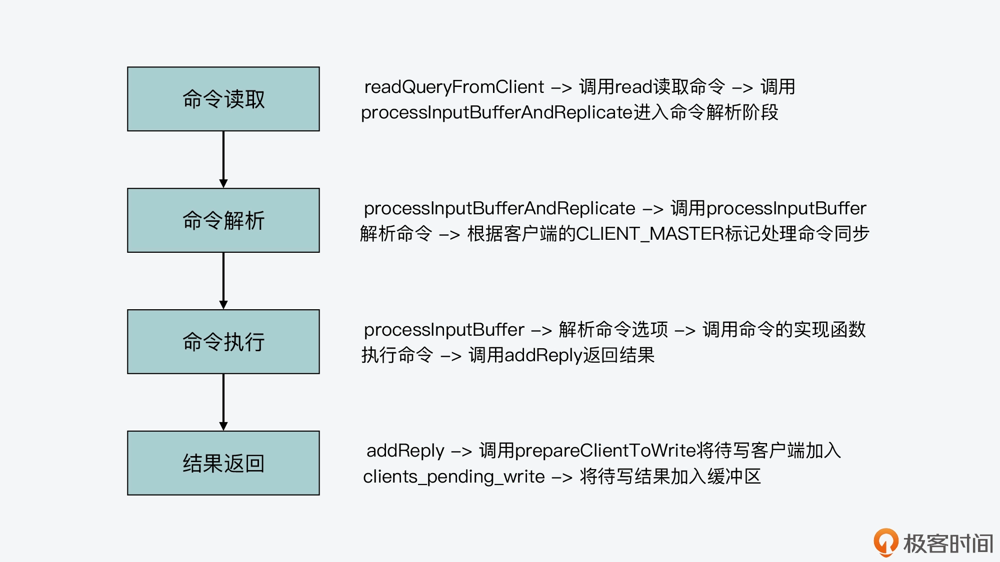

- 00 开篇词 阅读Redis源码能给你带来什么？.md
- 01 带你快速攻略Redis源码的整体架构.md
- 02 键值对中字符串的实现，用char还是结构体？.md
- 03 如何实现一个性能优异的Hash表？.md
- 04 内存友好的数据结构该如何细化设计？.md
- 05 有序集合为何能同时支持点查询和范围查询？.md
- 06 从ziplist到quicklist，再到listpack的启发.md
- 07 为什么Stream使用了Radix Tree？.md
- 08 Redis server启动后会做哪些操作？.md
- 09 Redis事件驱动框架（上）：何时使用select、poll、epoll？.md
- 10 Redis事件驱动框架（中）：Redis实现了Reactor模型吗？.md
- 11 Redis事件驱动框架（下）：Redis有哪些事件？.md
- 12 Redis真的是单线程吗？.md
- 13 Redis 6.0多IO线程的效率提高了吗？.md
- 14 从代码实现看分布式锁的原子性保证.md
- 15 为什么LRU算法原理和代码实现不一样？.md
- 16 LFU算法和其他算法相比有优势吗？.md
- 17 Lazy Free会影响缓存替换吗？.md
- 18 如何生成和解读RDB文件？.md
- 19 AOF重写（上）：触发时机与重写的影响.md
- 20 AOF重写（下）：重写时的新写操作记录在哪里？.md
- 21 主从复制：基于状态机的设计与实现.md
- 22 哨兵也和Redis实例一样初始化吗？.md
- 23 从哨兵Leader选举学习Raft协议实现（上）.md
- 24 从哨兵Leader选举学习Raft协议实现（下）.md
- 25 PubSub在主从故障切换时是如何发挥作用的？.md
- 26 从Ping-Pong消息学习Gossip协议的实现.md
- 27 从MOVED、ASK看集群节点如何处理命令？.md
- 28 Redis Cluster数据迁移会阻塞吗？.md
- 29 如何正确实现循环缓冲区？.md
- 30 如何在系统中实现延迟监控？.md
- 31 从Module的实现学习动态扩展功能.md
- 32 如何在一个系统中实现单元测试？.md
- 结束语 Redis源码阅读，让我们从新开始.md
14 从代码实现看分布式锁的原子性保证
分布式锁是 Redis 在实际业务场景中的一个重要应用。当有多个客户端并发访问某个共享资源时，比如要修改数据库中的某条记录，为了避免记录修改冲突，我们可以让所有客户端从 Redis 上获取分布式锁，只有拿到锁的客户端才能操作共享资源。
那么，对于分布式锁来说，它实现的关键就是要保证加锁和解锁两个操作是原子操作，这样才能保证多客户端访问时锁的正确性。而通过前面课程的学习，你知道 Redis 能通过事件驱动框架同时捕获多个客户端的可读事件，也就是命令请求。此外，在 Redis 6.0 版本中，多个 IO 线程会被用于并发地读取或写回数据。
而既然如此，你就可以来思考一个问题：分布式锁的原子性还能得到保证吗？
今天这节课呢，我就带你来了解下一条命令在 Redis server 中的执行过程，然后结合分布式锁的要求，来带你看下命令执行的原子性是如何保证的。同时，我们再来看看在有 IO 多路复用和多 IO 线程的情况下，分布式锁的原子性是否会受到影响。
这样一来，你就既可以掌握客户端的一条命令是如何完成执行的，其原子性是如何得到保证的，而且还可以把之前学习到的知识点串接应用起来。要知道，了解客户端命令的执行过程，对于日常排查 Redis 问题也是非常有帮助的，你可以在命令执行的过程中加入检测点，以便分析和排查运行问题。
好，那么接下来，我们就先来了解下分布式锁的实现方法，这样就能知道分布式锁对应的实现命令，以便进行进一步分析。
分布式锁的实现方法
我们在第一季的课程中，有学习过分布式锁的实现，你可以再去回顾下。这里，我再来简要介绍下分布式锁的加锁和解锁实现的命令。
首先，对于分布式锁的加锁操作来说，我们可以使用 Redis 的 SET 命令。Redis SET 命令提供了 NX 和 EX 选项，这两个选项的含义分别是：
- NX，表示当操作的 key 不存在时，Redis 会直接创建；当操作的 key 已经存在了，则返回 NULL 值，Redis 对 key 不做任何修改。
- EX，表示设置 key 的过期时间。
因此，我们可以让客户端发送以下命令来进行加锁。其中，lockKey 是锁的名称，uid 是客户端可以用来唯一标记自己的 ID，expireTime 是这个 key 所代表的锁的过期时间，当这个过期时间到了之后，这个 key 会被删除，相当于锁被释放了，这样就避免了锁一直无法释放的问题。
SET lockKey uid EX expireTime NX
而如果还没有客户端创建过锁，那么，假设客户端 A 发送了这个 SET 命令给 Redis，如下所示：
SET stockLock 1033 EX 30 NX
这样，Redis 就会创建对应的 key 为 stockLock，而键值对的 value 就是这个客户端的 ID 1033。此时，假设有另一个客户端 B 也发送了 SET 命令，如下所示，表示要把 key 为 stockLock 的键值对值，改为客户端 B 的 ID 2033，也就是要加锁。
SET stockLock 2033 EX 30 NX
由于使用了 NX 选项，如果 stockLock 的 key 已经存在了，客户端 B 就无法对其进行修改了，也就无法获得锁了，这样就实现了加锁的效果。
而对于解锁来说，我们可以使用如下的 Lua 脚本来完成，而 Lua 脚本会以 EVAL 命令的形式在 Redis server 中执行。客户端会使用 GET 命令读取锁对应 key 的 value，并判断 value 是否等于客户端自身的 ID。如果等于，就表明当前客户端正拿着锁，此时可以执行 DEL 命令删除 key，也就是释放锁；如果 value 不等于客户端自身 ID，那么该脚本会直接返回。
if redis.call("get",lockKey) == uid then
return redis.call("del",lockKey)
else
return 0
end
这样一来，客户端就不会误删除别的客户端获得的锁了，从而保证了锁的安全性。
好，现在我们就了解了分布式锁的实现命令。那么在这里，我们需要搞明白的问题就是：无论是加锁的 SET 命令，还是解锁的 Lua 脚本和 EVAL 命令，在有 IO 多路复用时，会被同时执行吗？或者当我们使用了多 IO 线程后，会被多个线程同时执行吗？
这就和 Redis 中命令的执行过程有关了。下面，我们就来了解下，一条命令在 Redis 是如何完成执行的。同时，我们还会学习到，IO 多路复用引入的多个并发客户端，以及多 IO 线程是否会破坏命令的原子性。
一条命令的处理过程
现在我们知道，Redis server 一旦和一个客户端建立连接后，就会在事件驱动框架中注册可读事件，这就对应了客户端的命令请求。而对于整个命令处理的过程来说，我认为主要可以分成四个阶段，它们分别对应了 Redis 源码中的不同函数。这里，我把它们对应的入口函数，也就是它们是从哪个函数开始进行执行的，罗列如下：
- 命令读取，对应 readQueryFromClient 函数；
- 命令解析，对应 processInputBufferAndReplicate 函数；
- 命令执行，对应 processCommand 函数；
- 结果返回，对应 addReply 函数；
那么下面，我们就来分别看下这四个入口函数的基本流程，以及为了完成命令执行，它们内部的主要调用关系都是怎样的。
命令读取阶段：readQueryFromClient 函数
首先，我们来了解下 readQueryFromClient 函数的基本流程。
readQueryFromClient 函数会从客户端连接的 socket 中，读取最大为 readlen 长度的数据，readlen 值大小是宏定义 PROTO_IOBUF_LEN。该宏定义是在server.h文件中定义的，默认值为 16KB。
紧接着，readQueryFromClient 函数会根据读取数据的情况，进行一些异常处理，比如数据读取失败或是客户端连接关闭等。此外，如果当前客户端是主从复制中的主节点，readQueryFromClient 函数还会把读取的数据，追加到用于主从节点命令同步的缓冲区中。
最后，readQueryFromClient 函数会调用 processInputBufferAndReplicate 函数，这就进入到了命令处理的下一个阶段，也就是命令解析阶段。
void readQueryFromClient(aeEventLoop *el, int fd, void *privdata, int mask) {
...
readlen = PROTO_IOBUF_LEN; //从客户端socket中读取的数据长度，默认为16KB
...
c->querybuf = sdsMakeRoomFor(c->querybuf, readlen); //给缓冲区分配空间
nread = read(fd, c->querybuf+qblen, readlen); //调用read从描述符为fd的客户端socket中读取数据
...
processInputBufferAndReplicate(c); //调用processInputBufferAndReplicate进一步处理读取内容
}
我在下面画了张图，展示了 readQueryFromClient 函数的基本流程，你可以看下。

命令解析阶段：processInputBufferAndReplicate 函数
processInputBufferAndReplicate 函数（在networking.c文件中）会根据当前客户端是否有 CLIENT_MASTER 标记，来执行两个分支。
- 分支一
这个分支对应了客户端没有 CLIENT_MASTER 标记，也就是说当前客户端不属于主从复制中的主节点。那么，processInputBufferAndReplicate 函数会直接调用 processInputBuffer（在 networking.c 文件中）函数，对客户端输入缓冲区中的命令和参数进行解析。所以在这里，实际执行命令解析的函数就是 processInputBuffer 函数。我们一会儿来具体看下这个函数。
- 分支二
这个分支对应了客户端有 CLIENT_MASTER 标记，也就是说当前客户端属于主从复制中的主节点。那么，processInputBufferAndReplicate 函数除了调用 processInputBuffer 函数，解析客户端命令以外，它还会调用 replicationFeedSlavesFromMasterStream 函数（在replication.c文件中），将主节点接收到的命令同步给从节点。
下图就展示了 processInputBufferAndReplicate 函数的基本执行逻辑，你可以看下。
好了，我们刚才了解了，命令解析实际是在 processInputBuffer 函数中执行的，所以下面，我们还需要清楚这个函数的基本流程是什么样的。
首先，processInputBuffer 函数会执行一个 while 循环，不断地从客户端的输入缓冲区中读取数据。然后，它会判断读取到的命令格式，是否以“*”开头。
如果命令是以“*”开头，那就表明这个命令是 PROTO_REQ_MULTIBULK 类型的命令请求，也就是符合 RESP 协议（Redis 客户端与服务器端的标准通信协议）的请求。那么，processInputBuffer 函数就会进一步调用 processMultibulkBuffer（在 networking.c 文件中）函数，来解析读取到的命令。
而如果命令不是以“*”开头，那则表明这个命令是 PROTO_REQ_INLINE 类型的命令请求，并不是 RESP 协议请求。这类命令也被称为管道命令，命令和命令之间是使用换行符“\r\n”分隔开来的。比如，我们使用 Telnet 发送给 Redis 的命令，就是属于 PROTO_REQ_INLINE 类型的命令。在这种情况下，processInputBuffer 函数会调用 processInlineBuffer（在 networking.c 文件中）函数，来实际解析命令。
这样，等命令解析完成后，processInputBuffer 函数就会调用 processCommand 函数，开始进入命令处理的第三个阶段，也就是命令执行阶段。
下面的代码展示了 processInputBuffer 函数解析命令时的主要流程，你可以看下。
void processInputBuffer(client *c) {
while(c->qb_pos < sdslen(c->querybuf)) {
...
if (!c->reqtype) {
//根据客户端输入缓冲区的命令开头字符判断命令类型
if (c->querybuf[c->qb_pos] == '*') {
c->reqtype = PROTO_REQ_MULTIBULK; //符合RESP协议的命令
} else {
c->reqtype = PROTO_REQ_INLINE; //管道类型命令
}
}
if (c->reqtype == PROTO_REQ_INLINE) {
if (processInlineBuffer(c) != C_OK) break; //对于管道类型命令，调用processInlineBuffer函数解析
} else if (c->reqtype == PROTO_REQ_MULTIBULK) {
if (processMultibulkBuffer(c) != C_OK) break; //对于RESP协议命令，调用processMultibulkBuffer函数解析
}
...
if (c->argc == 0) {
resetClient(c);
} else {
//调用processCommand函数，开始执行命令
if (processCommand(c) == C_OK) {
... }
... }
}
...
}
下图展示了 processInputBuffer 函数的基本执行流程，你可以再回顾下。

好，那么下面，我们接着来看第三个阶段，也就是命令执行阶段的 processCommand 函数的基本处理流程。
命令执行阶段：processCommand 函数
首先，我们要知道，processCommand 函数是在server.c文件中实现的。它在实际执行命令前的主要逻辑可以分成三步：
- 第一步，processCommand 函数会调用 moduleCallCommandFilters 函数（在module.c文件），将 Redis 命令替换成 module 中想要替换的命令。
- 第二步，processCommand 函数会判断当前命令是否为 quit 命令，并进行相应处理。
- 第三步，processCommand 函数会调用 lookupCommand 函数，在全局变量 server 的 commands 成员变量中查找相关的命令。
这里，你需要注意下，全局变量 server 的 commands 成员变量是一个哈希表，它的定义是在server.h文件中的 redisServer 结构体里面，如下所示：
struct redisServer {
...
dict *commands;
...
}
另外，commands 成员变量的初始化是在 initServerConfig 函数中，通过调用 dictCreate 函数完成哈希表创建，再通过调用 populateCommandTable 函数，将 Redis 提供的命令名称和对应的实现函数，插入到哈希表中的。
void initServerConfig(void) {
...
server.commands = dictCreate(&commandTableDictType,NULL);
...
populateCommandTable();
...
}
而这其中的 populateCommandTable 函数，实际上是使用到了 redisCommand 结构体数组 redisCommandTable。
redisCommandTable 数组是在 server.c 文件中定义的，它的每一个元素是一个 redisCommand 结构体类型的记录，对应了 Redis 实现的一条命令。也就是说，redisCommand 结构体中就记录了当前命令所对应的实现函数是什么。
比如，以下代码展示了 GET 和 SET 这两条命令的信息，它们各自的实现函数分别是 getCommand 和 setCommand。当然，如果你想进一步了解 redisCommand 结构体，也可以去看下它的定义，在 server.h 文件当中。
struct redisCommand redisCommandTable[] = {
...
{"get",getCommand,2,"rF",0,NULL,1,1,1,0,0},
{"set",setCommand,-3,"wm",0,NULL,1,1,1,0,0},
...
}
好了，到这里，你就了解了 lookupCommand 函数会根据解析的命令名称，在 commands 对应的哈希表中查找相应的命令。
那么，一旦查到对应命令后，processCommand 函数就会进行多种检查，比如命令的参数是否有效、发送命令的用户是否进行过验证、当前内存的使用情况，等等。这部分的处理逻辑比较多，你可以进一步阅读 processCommand 函数来了解下。
这样，等到 processCommand 函数对命令做完各种检查后，它就开始执行命令了。它会判断当前客户端是否有 CLIENT_MULTI 标记，如果有的话，就表明要处理的是 Redis 事务的相关命令，所以它会按照事务的要求，调用 queueMultiCommand 函数将命令入队保存，等待后续一起处理。
而如果没有，processCommand 函数就会调用 call 函数来实际执行命令了。以下代码展示了这部分的逻辑，你可以看下。
//如果客户端有CLIENT_MULTI标记，并且当前不是exec、discard、multi和watch命令
//如果客户端有CLIENT_MULTI标记，并且当前不是exec、discard、multi和watch命令
if (c->flags & CLIENT_MULTI &&
c->cmd->proc != execCommand && c->cmd->proc != discardCommand &&
c->cmd->proc != multiCommand && c->cmd->proc != watchCommand)
{
queueMultiCommand(c); //将命令入队保存，等待后续一起处理
addReply(c,shared.queued);
} else {
call(c,CMD_CALL_FULL); //调用call函数执行命令
...
}
这里你要知道，call 函数是在 server.c 文件中实现的，它执行命令是通过调用命令本身，即 redisCommand 结构体中定义的函数指针来完成的。而就像我刚才所说的，每个 redisCommand 结构体中都定义了它对应的实现函数，在 redisCommandTable 数组中能查找到。
因为分布式锁的加锁操作就是使用 SET 命令来实现的，所以这里，我就以 SET 命令为例来介绍下它的实际执行过程。
SET 命令对应的实现函数是 setCommand，这是在t_string.c文件中定义的。setCommand 函数首先会对命令参数进行判断，比如参数是否带有 NX、EX、XX、PX 等这类命令选项，如果有的话，setCommand 函数就会记录下这些标记。
然后，setCommand 函数会调用 setGenericCommand 函数，这个函数也是在 t_string.c 文件中实现的。setGenericCommand 函数会根据刚才 setCommand 函数记录的命令参数的标记，来进行相应处理。比如，如果命令参数中有 NX 选项，那么，setGenericCommand 函数会调用 lookupKeyWrite 函数（在db.c文件中），查找要执行 SET 命令的 key 是否已经存在。
如果这个 key 已经存在了，那么 setGenericCommand 函数就会调用 addReply 函数，返回 NULL 空值，而这也正是符合分布式锁的语义的。
下面的代码就展示了这个执行逻辑，你可以看下。
//如果有NX选项，那么查找key是否已经存在
if ((flags & OBJ_SET_NX && lookupKeyWrite(c->db,key) != NULL) ||
(flags & OBJ_SET_XX && lookupKeyWrite(c->db,key) == NULL))
{
addReply(c, abort_reply ? abort_reply : shared.nullbulk); //如果已经存在，则返回空值
return;
}
好，那么如果 SET 命令可以正常执行的话，也就是说命令带有 NX 选项但是 key 并不存在，或者带有 XX 选项但是 key 已经存在，这样 setGenericCommand 函数就会调用 setKey 函数（在 db.c 文件中）来完成键值对的实际插入，如下所示：
setKey(c->db,key,val);
然后，如果命令设置了过期时间，setGenericCommand 函数还会调用 setExpire 函数设置过期时间。最后，setGenericCommand 函数会调用 addReply 函数，将结果返回给客户端，如下所示：
addReply(c, ok_reply ? ok_reply : shared.ok);
好了，到这里，SET 命令的执行就结束了，你也可以再看下下面的基本流程图。

而且你也可以看到，无论是在命令执行的过程中，发现不符合命令的执行条件，或是命令能成功执行，addReply 函数都会被调用，用来返回结果。所以，这就进入到我所说的命令处理过程的最后一个阶段：结果返回阶段。
结果返回阶段：addReply 函数
addReply 函数是在 networking.c 文件中定义的。它的执行逻辑比较简单，主要是调用 prepareClientToWrite 函数，并在 prepareClientToWrite 函数中调用 clientInstallWriteHandler 函数，将待写回客户端加入到全局变量 server 的 clients_pending_write 列表中。
然后，addReply 函数会调用 _addReplyToBuffer 等函数（在 networking.c 中），将要返回的结果添加到客户端的输出缓冲区中。
好，现在你就了解一条命令是如何从读取，经过解析、执行等步骤，最终将结果返回给客户端的了。下图展示了这个过程以及涉及的主要函数，你可以再回顾下。

不过除此之外，你还需要注意一点，就是如果在前面的命令处理过程中，都是由 IO 主线程处理的，那么命令执行的原子性肯定能得到保证，分布式锁的原子性也就相应能得到保证了。
但是，如果这个处理过程配合上了我们前面介绍的 IO 多路复用机制和多 IO 线程机制，那么，这两个机制是在这个过程的什么阶段发挥作用的呢，以及会不会影响命令执行的原子性呢？
所以接下来，我们就来看下它们各自对原子性保证的影响。
IO 多路复用对命令原子性保证的影响
首先你要知道，IO 多路复用机制是在 readQueryFromClient 函数执行前发挥作用的。它实际是在事件驱动框架中调用 aeApiPoll 函数，获取一批已经就绪的 socket 描述符。然后执行一个循环，针对每个就绪描述符上的读事件，触发执行 readQueryFromClient 函数。
这样一来，即使 IO 多路复用机制同时获取了多个就绪 socket 描述符，在实际处理时，Redis 的主线程仍然是针对每个事件逐一调用回调函数进行处理的。而且对于写事件来说，IO 多路复用机制也是针对每个事件逐一处理的。
下面的代码展示了 IO 多路复用机制通过 aeApiPoll 函数获取一批事件，然后逐一处理的逻辑，你可以再看下。
numevents = aeApiPoll(eventLoop, tvp);
for (j = 0; j < numevents; j++) {
aeFileEvent *fe = &eventLoop->events[eventLoop->fired[j].fd];
if (!invert && fe->mask & mask & AE_READABLE) {
fe->rfileProc(eventLoop,fd,fe->clientData,mask);
fired++;
}
所以这也就是说，**即使使用了 IO 多路复用机制，命令的整个处理过程仍然可以由 IO 主线程来完成，也仍然可以保证命令执行的原子性。**下图就展示了 IO 多路复用机制和命令处理过程的关系，你可以看下。

接下来，我们再来看下多 IO 线程对命令原子性保证的影响。
多 IO 线程对命令原子性保证的影响
我们知道，多 IO 线程可以执行读操作或是写操作。那么，对于读操作来说，readQueryFromClient 函数会在执行过程中，调用 postponeClient 将待读客户端加入 clients_pending_read 等待列表。这个过程你可以再回顾下【第 13 讲】。
然后，待读客户端会被分配给多 IO 线程执行，每个 IO 线程执行的函数就是 readQueryFromClient 函数，readQueryFromClient 函数会读取命令，并进一步调用 processInputBuffer 函数解析命令，这个基本过程和 Redis 6.0 前的代码是一样的。
不过，相比于 Redis 6.0 前的代码，在 Redis 6.0 版本中，processInputBuffer 函数中新增加了一个判断条件，也就是当客户端标识中有 CLIENT_PENDING_READ 的话，那么在解析完命令后，processInputBuffer 函数只会把客户端标识改为 CLIENT_PENDING_COMMAND，就退出命令解析的循环流程了。
此时，processInputBuffer 函数只是解析了第一个命令，也并不会实际调用 processCommand 函数来执行命令，如下所示：
void processInputBuffer(client *c) {
/* Keep processing while there is something in the input buffer */
while(c->qb_pos < sdslen(c->querybuf)) {
...
if (c->argc == 0) {
resetClient(c);
} else {
//如果客户端有CLIENT_PENDING_READ标识，将其改为CLIENT_PENDING_COMMAND，就退出循环，并不调用processCommandAndResetClient函数执行命令
if (c->flags & CLIENT_PENDING_READ) {
c->flags |= CLIENT_PENDING_COMMAND;
break;
}
if (processCommandAndResetClient(c) == C_ERR) {
return;
}
}
}
}
这样，等到所有的 IO 线程都解析完了第一个命令后，IO 主线程中执行的 handleClientsWithPendingReadsUsingThreads 函数，会再调用 processCommandAndResetClient 函数执行命令，以及调用 processInputBuffer 函数解析剩余命令，这部分的内容你也可以再回顾下第 13 讲。
所以现在，你就可以知道，即使使用了多 IO 线程，其实命令执行这一阶段也是由主 IO 线程来完成的，所有命令执行的原子性仍然可以得到保证，也就是说分布式锁的原子性也仍然可以得到保证。
我们再来看下写回数据的流程。
在这个阶段，addReply 函数是将客户端写回操作推迟执行的，而此时 Redis 命令已经完成执行了，所以，即使有多个 IO 线程在同时将客户端数据写回，也只是把结果返回给客户端，并不影响命令在 Redis server 中的执行结果。也就是说，即使使用了多 IO 线程写回，Redis 同样可以保证命令执行的原子性。
下图展示了使用多 IO 线程机制后，命令处理过程各个阶段是由什么线程执行的，你可以再看下。
小结
今天这节课我主要结合分布式锁的原子性保证需求，带你学习了 Redis 处理一条命令的整个过程。其中，你需要重点关注分布式锁实现的方法。
我们知道，加锁和解锁操作分别可以使用 SET 命令和 Lua 脚本与 EVAL 命令来完成。那么，分布式锁的原子性保证，就主要依赖 SET 和 EVAL 命令在 Redis server 中执行时的原子性保证了。
紧接着，我还带你具体剖析了下 Redis 中命令处理的整个过程。我把这个过程分成了四个阶段，分别是命令读取、命令解析、命令执行和结果返回。所以，你还需要了解这四个阶段中所执行函数的主要流程。
这四个阶段在 Redis 6.0 版本前都是由主 IO 线程来执行完成的。虽然 Redis 使用了 IO 多路复用机制，但是该机制只是一次性获取多个就绪的 socket 描述符，对应了多个发送命令请求的客户端。而 Redis 在主 IO 线程中，还是逐一来处理每个客户端上的命令的，所以命令执行的原子性依然可以得到保证。
而当使用了 Redis 6.0 版本后，命令处理过程中的读取、解析和结果写回，就由多个 IO 线程来处理了。不过你也不用担心，多个 IO 线程只是完成解析第一个读到的命令，命令的实际执行还是由主 IO 线程处理。当多个 IO 线程在并发写回结果时，命令就已经执行完了，不存在多 IO 线程冲突的问题。所以，使用了多 IO 线程后，命令执行的原子性仍然可以得到保证。
好，最后，我也想再说下我对多 IO 线程的看法。从今天课程介绍的内容中，你可以看到，多 IO 线程实际并不会加快命令的执行，而是只会将读取解析命令并行化执行，以及写回结果并行化执行，并且读取解析命令还是针对收到的第一条命令。实际上，这一设计考虑还是由于网络 IO 需要加速处理。那么，如果命令执行本身成为 Redis 运行时瓶颈了，你其实可以考虑使用 Redis 切片集群来提升处理效率。
每课一问
如果将命令处理过程中的命令执行也交给多 IO 线程执行，你觉得除了对原子性会有影响，还会有什么好处或是其他不好的影响吗？
欢迎在留言区分享你的答案和见解。如果觉得有收获，也欢迎你把今天的内容分享给更多的朋友。
© 2019 - 2023 Liangliang Lee. Powered by Vert.x and hexo-theme-book.